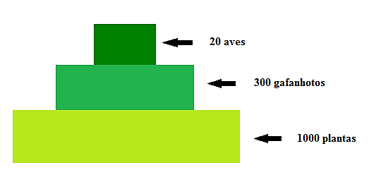
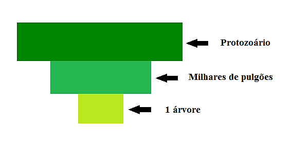
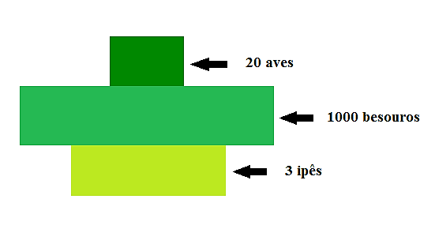
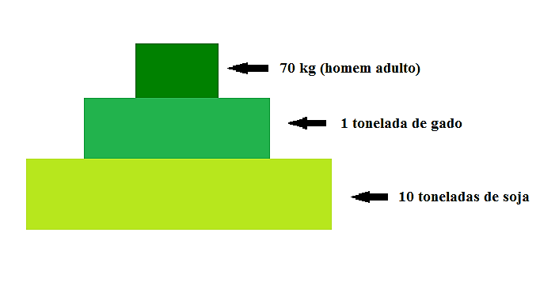
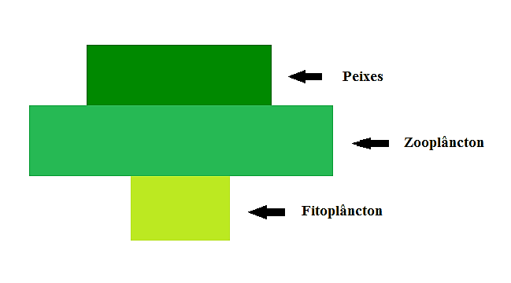
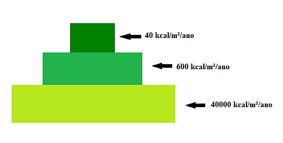

Em uma teia alimentar, a relação entre os diferentes níveis trófico são representadas por gráficos que lembram pirâmides, pelo fato de haver uma redução da quantidade da matéria e de energia em cada nível trófico. São as chamadas pirâmides ecológicas, existentes em três tipos:
Dependendo do ecossistema, pode ter o ápice para cima (pirâmide comum) ou para baixo (pirâmide invertida). No primeiro caso, é necessário um grande número de produtores para alimentar poucos herbívoros, que servirão de alimento para um número ainda menor de carnívoros.
O segundo caso, totalmente invertida, ocorre apenas em certas redes alimentares parasitas.
Em um terceiro caso, pode ser invertida apenas entre os níveis dos produtores e dos consumidores primários.
A biomassa é a massa total de matéria orgânica presente na unidade ecológica a que se refere (um ecossistema, nesse caso). Também pode ser descrita por valores em relação a uma certa área (ou um volume) onde está presente.
De modo geral, a biomassa dos produtores é maior que a dos herbívoros, que é maior que a dos carnívoros (pirâmide comum). Isso ocorre nos ecossistemas terrestres.
Apresenta se invertida quando consideramos ecossistemas aquáticos. Nesse caso, os produtores são representados por algas microscópicas com ciclo de vida curto, e de aproveitamento rápido pelo zooplâncton.
Deve-se lembrar: a medida da biomassa é feita para um determinado instante e, devido à alta taxa de reprodução do fitoplâncton em relação ao zooplâncton, e o rápido consumo, obtêm-se uma biomassa de produtores menor que a de consumidores de primeira ordem.
Sempre apresenta seu ápice voltado para cima, pois o fluxo de energia é unidirecional e decrescente.
O primeiro nível corresponde à matéria orgânica produzida pelos autótrofos de um ecossistema em um determinado tempo. Chamamos de produtividade primária bruta (PPB) e parte desta é usada no metabolismo da própria planta, na respiração celular, de forma que a matéria orgânica não utilizada é disponibilizada aos demais níveis tróficos. Essa matéria orgânica acumulada é chamada de produtividade primária liquida (PPL = PPB - Respiração).
Os consumidores primários, além de não consumirem toda a biomassa dos produtores, não aproveitam grande parte da que foi ingerida. A produtividade secundaria liquida (PSL) é a quantidade de energia que o herbívoro conseguiu absorver dos alimentos, já subtraído o valor que é utilizado para a manutenção de seu metabolismo.
